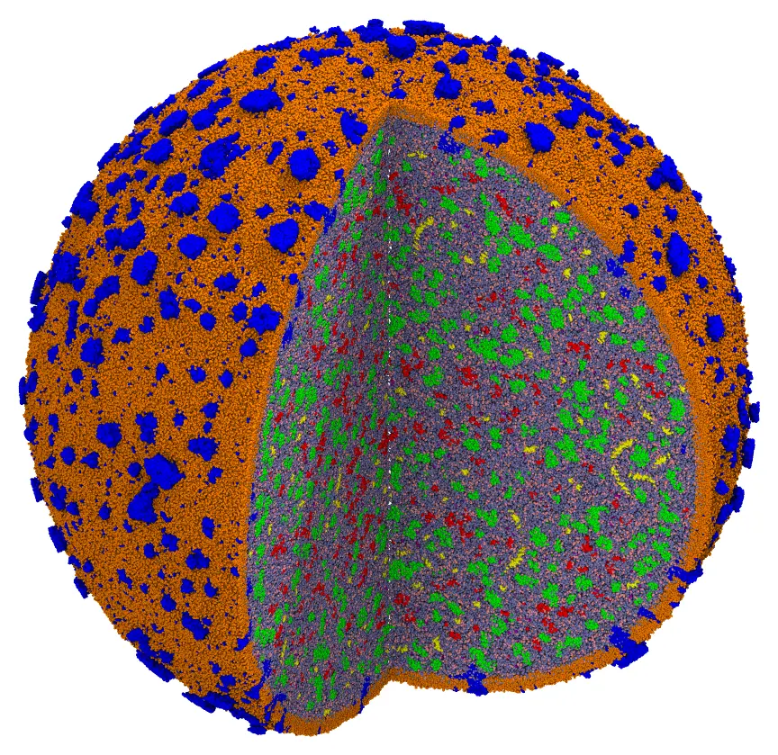
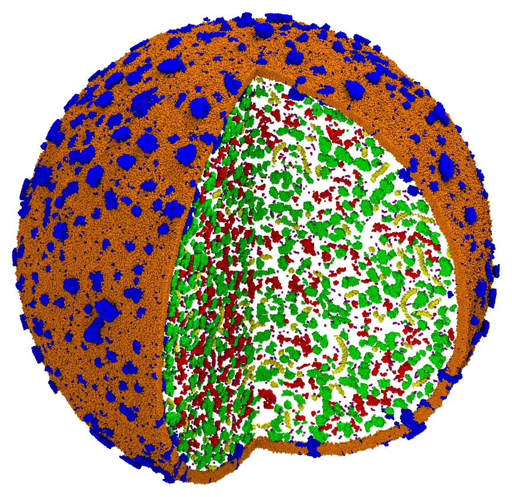

Minimal cell (voxel placement of Bentopy)
The minimal bacterial cell JCVI-Syn3A, coarse-grained (Martini), built from the published model of Bentopy:
M. S. S. Westendorp et al., Compartment-guided assembly of large-scale molecular models with Bentopy, Protein Science (2026) e70480. doi:10.1002/pro.70480
Its membrane (with its proteins) and its chromosome are taken from Bentopy's model, and fixed. The 41,967 proteins, RNAs and metabolites of the cytosol, those of Bentopy's input, are placed by voxel_place, the direct port to Julia of Bentopy's placement algorithm (see Placement on a grid (Bentopy)), and packed by Packmol. The cytosol is then solvated with water and glycerol. The final system has about 40 million beads.

The cell with a quarter cut out: the membrane lipids (orange) and proteins (blue), the chromosome (yellow), and the proteins (green), RNAs (red) and metabolites (purple) of the cytosol, in water (light blue) and glycerol (pink).
The data are those of the paper, not distributed with Packmol: download the archive of the models of Bentopy from Zenodo, doi:10.5281/zenodo.17524049 (4 GB, CC-BY 4.0), and extract it. The model of the cell is in its cell directory.
The system
- The membrane and the chromosome, from Bentopy's model (
membrane.groandchromosome.gro), fixed. The membrane is a sphere of about 950 Å of radius. - The proteins, RNAs and metabolites, the molecules of Bentopy's input (
input.bent), in its numbers: in the cytosol, within 950 Å of the center of the membrane (the membrane, fixed, bounds them). The peripheral proteins (in Bentopy, within 20 nm of the membrane) have the bead closest to their center beyond 630 Å. - The solvent: Martini water and glycerol (15% v/v, a two-bead placeholder of glycerol), in the free volume of the cytosol.
A script converts the model to Packmol's input:
The script prepare.jl (click to expand)
#
# Packmol inputs for the minimal cell JCVI-Syn3A from the published model of Bentopy
# (Westendorp et al., Protein Science 2026, doi:10.1002/pro.70480; data: Zenodo record
# 17524049, doi:10.5281/zenodo.17524049, CC-BY 4.0).
#
# julia prepare.jl path/to/zenodo/cell
#
# `path/to/zenodo/cell` is the `cell` directory of the Zenodo archive (`zenodo.tar.gz`).
# Writes, in the current directory:
# structures/ the molecules of the cell (PDB, Å), from Bentopy's structures
# membrane.cif the membrane (with its proteins), from Bentopy's model, fixed
# chromosome.cif the chromosome, from Bentopy's model, fixed
# cell.inp the proteins, RNAs and metabolites of Bentopy's input (input.bent),
# in the cytosol, placed by voxel_place and packed
# w.pdb, gly.pdb the solvent: a Martini water bead, and a two-bead placeholder of
# glycerol (for solvation.inp)
#
using PDBToolsBase: Atom, read_pdb, write_pdb, write_mmcif
using LinearAlgebra: norm
using Printf: @sprintf
using Statistics: mean
const bentopy = ARGS[1]
# A .gro file as atoms (nm to Å)
function read_gro(file)
io = open(file)
readline(io)
n = parse(Int, strip(readline(io)))
atoms = Vector{Atom}(undef, n)
for i in 1:n
l = readline(io)
atoms[i] = Atom(; index = i, index_pdb = i, resnum = parse(Int, l[1:5]),
resname = strip(l[6:10]), name = strip(l[11:15]),
x = 10parse(Float64, l[21:28]), y = 10parse(Float64, l[29:36]), z = 10parse(Float64, l[37:44]))
end
close(io)
return atoms
end
# The membrane and the chromosome, fixed; the center of the cell: the center of the lipids
membrane = read_gro(joinpath(bentopy, "membrane.gro"))
chromosome = read_gro(joinpath(bentopy, "chromosome.gro"))
lipids = ("CHOL", "CDL2", "DPSM", "POPC", "POPE", "POPG", "DPPC", "POPS", "DOPC", "DPPE", "PPCS")
center = mean([Float64(a.x), Float64(a.y), Float64(a.z)] for a in membrane if a.resname in lipids) # Float64: 7.8M atoms
write_mmcif("membrane.cif", membrane)
write_mmcif("chromosome.cif", chromosome)
# The cytosol: within 950 Å of the center (the reach of the cytosol of Bentopy's model; the
# membrane bounds it). The peripheral proteins (Bentopy: within 20 nm of the membrane): the
# atom closest to their center beyond 630 Å.
R_cytosol = 950.0
R_peripheral = 630.0
sphere(R) = @sprintf("sphere %.4f %.4f %.4f %.1f", center..., R)
mkpath("structures")
open("cell.inp", "w") do io
println(io, """
#
# The minimal cell JCVI-Syn3A, from the model of Bentopy (Westendorp et al., Protein
# Science 2026): its membrane and chromosome fixed, and its proteins, RNAs and
# metabolites placed by the voxel placement of Bentopy (voxel_place) and packed.
#
# check_initial_placement
tolerance 4.0
seed 1
output cell.cif
# The voxel placement of Bentopy, with its max-tries-mult for this model
voxel_place 100000
structure membrane.cif
number 1
fixed 0. 0. 0. 0. 0. 0.
end structure
structure chromosome.cif
number 1
fixed 0. 0. 0. 0. 0. 0.
end structure
""")
for l in eachline(joinpath(bentopy, "input.bent"))
m = match(r"^(\S+)\s+(\d+)\s+from\s+\"([^\"]+)\"\s+in\s+(\S+)", l)
isnothing(m) && continue
name, number, path, compartment = m.captures
parse(Int, number) > 0 || continue
name = replace(split(name, ':')[1], r"[^A-Za-z0-9_-]" => "_")
file = "structures/$name.pdb"
atoms = endswith(path, ".gro") ? read_gro(joinpath(bentopy, path)) : read_pdb(joinpath(bentopy, path))
isfile(file) || write_pdb(file, atoms)
println(io, "structure $file\n number $number\n inside $(sphere(R_cytosol))")
if compartment == "peripheral"
x = [[a.x, a.y, a.z] for a in atoms]
icenter = argmin(norm.(x .- Ref(mean(x))))
println(io, " atoms $icenter\n outside $(sphere(R_peripheral))\n end atoms")
end
println(io, "end structure")
end
end
# The solvent
write("w.pdb", "HETATM 1 W W 1 0.000 0.000 0.000 1.00 0.00 W\nEND\n")
write("gly.pdb", """
HETATM 1 G1 GLY 1 0.000 0.000 0.000 1.00 0.00 C
HETATM 2 G2 GLY 1 4.000 0.000 0.000 1.00 0.00 C
END
""")
println("center of the cell: ", center)
julia prepare.jl path/to/zenodo/cellIt writes the structures of the molecules (structures/), the membrane and the chromosome (membrane.cif, chromosome.cif), the solvent (w.pdb, gly.pdb), and the input file cell.inp, with a structure block per molecule of Bentopy's input:
tolerance 4.0
seed 1
output cell.cif
# The voxel placement of Bentopy, with its max-tries-mult for this model
voxel_place 100000
structure membrane.cif
number 1
fixed 0. 0. 0. 0. 0. 0.
end structure
structure chromosome.cif
number 1
fixed 0. 0. 0. 0. 0. 0.
end structure
structure structures/002_monomer.pdb
number 19
inside sphere 1070.8055 1068.5261 1064.6064 950.0
end structure
...The tolerance of 4 Å, the diameter of the beads of Bentopy's model (2 Å of radius), gives voxels of 5 Å, those of Bentopy's model.
Command line
Step 1: the voxel placement, and the packing
The keyword voxel_place places the molecules with the algorithm of Bentopy before the packing. Molecules that do not fit are left out, as Bentopy does, and reported:
packmol cell.inpThe placement took 16 seconds: 41,835 of the 41,967 molecules fit, and 132 RNAs, each of a structure type of a single molecule, did not, which the report lists with a significant warning (all the molecules of those types were left out). These are the numbers of Bentopy's own model, which also left out 132 RNAs. The packing then converged at the first loop: the molecules placed on the voxel grid do not overlap (minimum distance 4.05 Å). With reading the input and writing the output, a 4.2 GB mmCIF file, this step takes 2 minutes with 14 threads, and 20 GB of memory.

The output of the first step, cut as the image above: the molecules placed by the voxel placement, and packed.
Step 2: the solvent
The output of the first step is fixed, and the cytosol is filled with water and glycerol:
The input file solvation.inp (click to expand)
#
# The cytosol of the minimal cell (cell.cif, packed from cell.inp, fixed) solvated with
# Martini water and glycerol: 15% v/v of the free volume (2.44e9 ų, from free_volume),
# glycerol as a two-bead placeholder. Tolerance of 2 Å: enough for the energy
# minimization of a coarse-grained model.
#
# check_initial_placement
tolerance 2.0
seed 1
output cell_solvated.cif
structure cell.cif
number 1
fixed 0. 0. 0. 0. 0. 0.
end structure
structure w.pdb
number 17300000
inside sphere 1070.8055 1068.5261 1064.6063 940.0
end structure
structure gly.pdb
number 3020000
inside sphere 1070.8055 1068.5261 1064.6063 940.0
end structure
packmol solvation.inpThe packing of 17.3 million water beads and 3 million glycerol placeholders converged in 2 loops, 8.5 minutes with 14 threads, using 80 GB of memory: the cell, with 39.6 million beads, built in about 11 minutes.
Julia
The same steps in Julia (after julia prepare.jl path/to/zenodo/cell):
using Packmol# Step 1: the voxel placement, and the packing (the keyword voxel_place of cell.inp)packmol("cell.inp") # check_initial_placement = true# Step 2: the solventpackmol("solvation.inp")Or, with the voxel placement as a separate step, to check what was left out before packing (with voxel_place removed from cell.inp):
placed, dropped = voxel_place("cell.inp"; max_tries_mult = 100_000)packmol(placed)The placement algorithm, and the model of the cell, are Bentopy's: if you use them, please cite the paper above. For building cells and other crowded compartments, Bentopy itself offers more (compartments from voxel masks and their combinations, concentrations, and the features its authors keep adding); Packmol packs and solvates its output too, starting from its coordinates (restart_from).